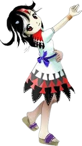

Seija é frequentemente vista como:
Rebelde – ela gosta de contrariar regras, autoridades e expectativas.🧠 Pensamento invertido
Como um amanojaku, Seija naturalmente se opõe a tudo:
Discorda por natureza
Gosta de inverter valores e situações
Acha prazer em contrariar o senso comum
Para ela, ir contra é quase um instinto.
😈 Espírito de rebeldia
Seija tem um forte desejo de desafiar a ordem estabelecida:
Não gosta de autoridades ou regras
Apoia causas caóticas ou revolucionárias
Age contra qualquer sistema dominante
Ela não busca justiça — apenas a inversão do poder.
🎭 Comportamento manipulador
Seija pode ser bastante manipuladora:
Tenta convencer outros a agir contra si mesmos
Usa ironia e sarcasmo com frequência
Não demonstra lealdade real a ninguém
Ela prefere usar os outros como ferramentas.
🤝 Relação com os outros
Seija raramente forma laços verdadeiros:
Vê os outros como alvos ou peças de jogo
Já colaborou com personagens apenas por interesse
É desconfiada e não cria vínculos duradouros
Sua natureza a impede de confiar ou cooperar plenamente.
Amanojaku (espírito rebelde)
Seija é um amanojaku, uma criatura cuja natureza é contrariar tudo e todos. Ela age de forma independente, causando distúrbios e conflitos em Gensokyo.
Instigadora de revoltas
Ela participou de movimentos para inverter a hierarquia de Gensokyo, incentivando a desordem e tentando derrubar estruturas de poder.
Inversão
A habilidade principal de Seija é inverter coisas:
Virar objetos de cabeça para baixo
Inverter direções e gravidade
Confundir percepção espacial
Criar situações caóticas e imprevisíveis
Isso torna seus ataques e estratégias extremamente difíceis de prever.
Uso do Miracle Mallet
Seija já utilizou o "Milagre Martelo", um artefato capaz de realizar desejos ao custo de distorções na realidade. Isso aumentou seu poder temporariamente e ampliou seu potencial de causar caos.
Mobilidade aérea
Seija é capaz de voar, permitindo combates aéreos rápidos e imprevisíveis, aproveitando sua habilidade de inverter o espaço ao seu redor.
Seu estilo de combate é desorientador, caótico e totalmente fora do padrão.

Espécie:Amanojaku
Título:The Wicked Hermit